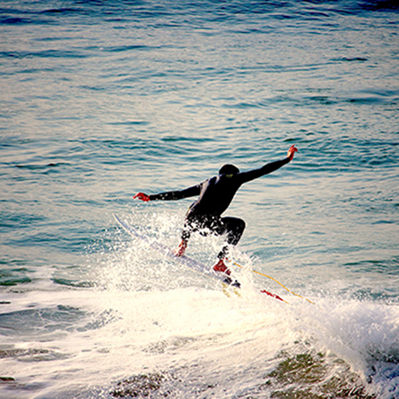

There are many good places to surf, some of which you can get to by subway or commuter train. Hover over each beach location for more details. This map shows some of the more popular beaches, but there are many more, lesser known areas to surf all along the southern shore of Long Island.
Beaches

BEACH 92ND STREET, ROCKAWAY
Rockaway's main surfing beach is just blocks from the A train and perhaps New York's most crowded breaks. It's also one of the more dangerous and challenging waves-steep, fast, and often unpredictable. The congestion can make the natives (or those claiming to be natives) testy.

BEACH 67TH STREET, ROCKAWAY
Rock’s other surfing beach is every bit as steep and erratic as the break at 92nd Street, though not nearly as crowded or hostile, making it a better spot for learning. Novice surfers should stay aware of the wooden pilings protruding from the shoreline before catching a wave.
LINCOLN BOULEVARD, LONG BEACH
Mellow and incredibly predictable, the break is excellent for beginners (and located just a few blocks from the LIRR station and Unsound surf shop, where you can rent a board). Best spot for a post-surf nosh: the Beach House on West Beech Street.

NATIONAL BOULEVARD, LONG BEACH
The consistent, user-friendly wave was one of the best-kept secrets of the Long Beach surf scene for years. Then came the posh Allegria Hotel, a National Boulevard surf cam (nysea.com), and the ongoing ASP World Tour event, all of which means its low-flying days are done.